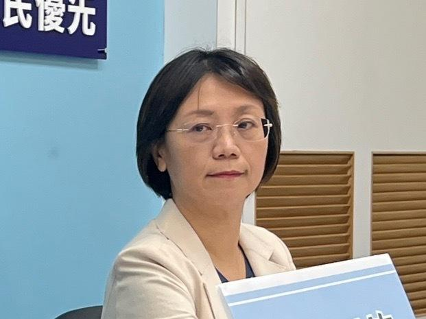

羽球黄金男双「麟洋配」李洋、王齐麟为台湾在巴黎奥运夺下第一面金牌，国民党立委翁晓玲在微信上称麟洋配夺金是「中国人的骄傲」，引发热议。翁晓玲今表示，在世界舞台上，已连续两届奥运赛的男子羽球双打，都是我们炎黄子孙、两岸同胞在精彩对赛，感到无比光荣，不管谁赢，都是两岸中国人的骄傲；对于发文遭人批评、攻击、抹黑，她深感遗憾。
翁晓玲指出，遗憾的是，央视因为某些因素，特意不转播这场世纪之战，让中国的球迷朋友错失观赏这场精彩比赛的机会。因此，她想她中国的好朋友们也会很关心这场比赛，所以在微信贴文公布比赛结果，让朋友们分享此刻我们的喜悦。
翁晓玲说，当中华队获胜的第一时间，她在微信发了一则图片贴文，狂贺「麟洋配」夺金，并说是中国人的骄傲。她还发了第二则影片贴文，是唱国旗歌的那一段，看到颁奖的那一刻，现场响起了国旗歌，转播画面里，全场齐声高唱国旗歌，当下，她的内心是非常感动的，所以也上传了齐唱国旗歌的这个影片到微信上。另外她也在脸书、LINE同步贴文跟发影片：同心同德、贯彻始终，才能齐力得金；对于她的发文遭人批评、攻击、抹黑，深感遗憾。